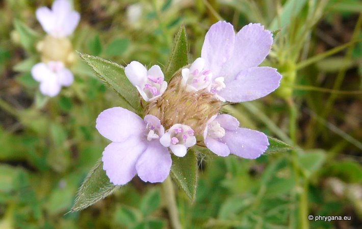
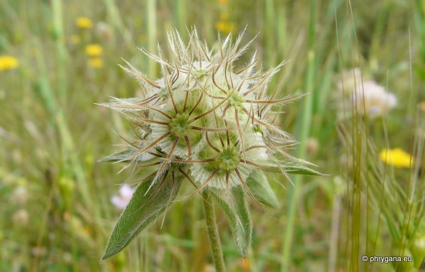

| PHRYGANA | Fauna | Flora |
additions nouveautés |
espèces species |
contact -
info - commentaires phrygana1 (at) gmail.com |
| diversité crétoise -- Cretan diversity | |||||
| Lomelosia brachiata (Sm.) GREUTER & BURDET |
| 253 | Flora | CAPRIFOLIACEAE | ex DIPSACACEAE | Lomelosia RAFIN. |
 Lomelosia brachiata Agios Giorgos (Melambes) 13 avril 2011 |
| Syn: Tremastelma palaestinum (L.) JANCHEN | |
| fr: la Scabieuse de Palestine | |
| Plante dressée poilue | |
| Feuilles: feuilles inférieures ovales entières à pennées, le lobe terminal large, les lobes latéraux petits et linéaires; feuilles caulinaires le plus souvent découpées | |
| Tiges: assez fortes, couchées-ascendantes, poilues. | |
| Fleurs: couleur rose à lilas; tête large de 15 - 30 mm portée par un long pédoncule; fleurs extérieures plus longues que les fleurs centrales; bractées de l'involucre aussi longues que les fleurs; calice poilu | |
| Fruits: groupés en une tête globuleuse, scarieux et bruns à maturité; achènes à dix soies plumeuses deux à trois la longueur de la couronne | |
| Hauteur: 20 - 50 cm | Type biologique: thérophyte ramifié |
| Floraison: mars avril mai | |
| Altitudes: 0 - 1200 m | |
| Statut en Crète: indigène | |
| Biotopes en Crète: vieilles olivaies, phrygana, collines caillouteuses | |
| Distribution: région Méditerranéenne orientale (Grèce, Albanie,Turquie, Proche-Orient, Chypre) | |
|
 Lomelosia brachiata Agios Giorgos (Melanmbes) 13 avril 2011 |
| 06 septembre 2011 |
| © paul fontaine -- © Phrygana.eu 2007 -- 2013 |